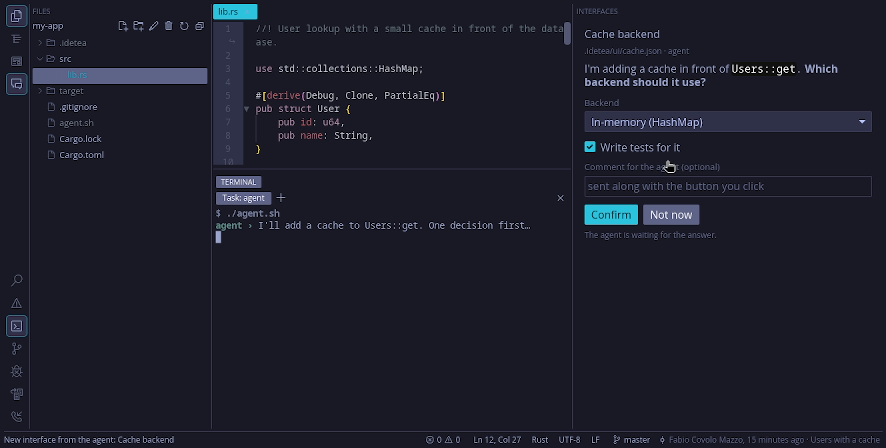
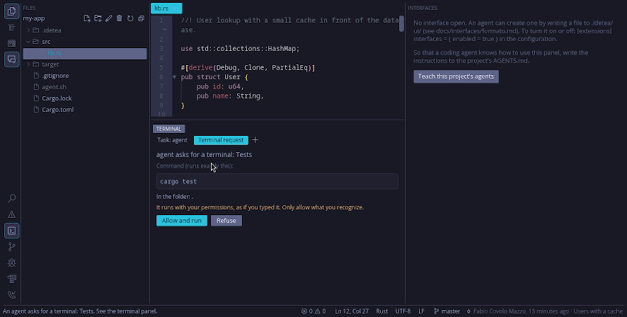
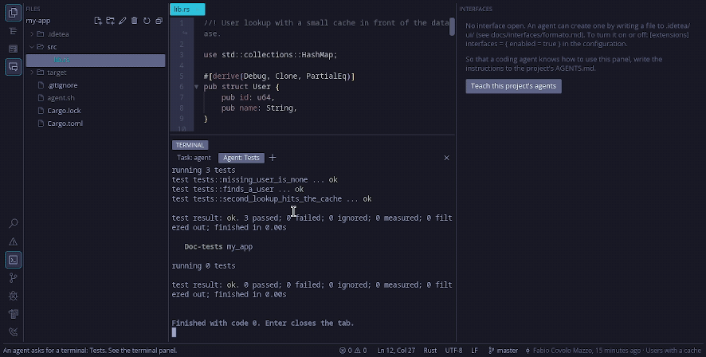

Rápido
Abre y se aparta
Arranca muy por debajo de 200 ms. Un archivo de 50 MB abre en una décima de segundo. Un archivo minificado, de una sola línea, abre en un modo ligero en vez de congelar la ventana.
Gratis · Apache 2.0 · Rust puro
Un IDE rápido y silencioso, donde los agentes de código preguntan antes de actuar. Tú te quedas en el editor. El agente se queda en la terminal. La pregunta aparece como un formulario, y nada se ejecuta hasta que tú lo dices.
Linux (x86_64 y aarch64), macOS (Apple Silicon) y Windows (x86_64). Antes de la 1.0.
Para quién es. Para quien programa junto a Claude Code, Codex o cualquier agente que lea AGENTS.md y CLAUDE.md, y quiere un editor que abra rápido, sea predecible y no ande tocando la red.
Rápido
Arranca muy por debajo de 200 ms. Un archivo de 50 MB abre en una décima de segundo. Un archivo minificado, de una sola línea, abre en un modo ligero en vez de congelar la ventana.
Silencioso
Ninguna ventana emergente de una función que no pediste. La red solo entra cuando tú lo pides (push, pull, fetch, o una skill que instalas). La configuración vive en un archivo TOML.
Al mando
La pregunta es un formulario de verdad: opciones, casillas, pasos, imágenes, sonidos. El pedido de terminal muestra el comando completo. Un proyecto no puede meterse solo en tu lista de permisos.
Editor
Varios cursores, modo vim opcional, árbol de archivos, búsqueda en el proyecto, LSP, git, terminal integrada, depuración con gdb, y pestañas de Markdown, SVG, imagen y PDF.
Pequeño
El árbol, la terminal, git y el depurador son extensiones que puedes desactivar. Tea, la mascota en pixel art, avisa cuando hay una pregunta esperando y se aparta cuando la pliegas.



De la comparación honesta con VS Code, Cursor, Zed, JetBrains y Helix (en portugués). El texto es de alrededor de la 0.4.0. Las versiones de ahora también salen para macOS (Apple Silicon) y Windows (x86_64).
Listo para usar en la última versión. SHA256SUMS tiene las sumas de verificación.
x86_64 y aarch64, .tar.gz o .AppImage. ./install.sh pone idetea en ~/.local/bin y en el menú. El AppImage necesita chmod +x; --install-desktop crea la entrada del menú.
Apple Silicon, un .tar.gz con IDE TEA.app. idetea --install-desktop crea ~/Applications/IDE TEA.app.
x86_64, el instalador -setup.exe o un .zip portátil. Firma gratuita de SignPath.io, certificado de la SignPath Foundation.
Desde el código (necesita Rust estable):
cargo install --locked --git https://github.com/fabiocmazzo/idetea tea-app
idetea --install-desktopOpcionales: git para el panel de git, gdb 14+ (o lldb-dap en macOS) para depurar, y los servidores de lenguaje que uses. rust-analyzer, clangd, pyright, typescript-language-server, gopls y lua-language-server ya vienen configurados.

IDE TEA es el proyecto de una persona, Apache 2.0, y va a seguir siendo gratis. La estrella ayuda a que la siguiente persona lo encuentre.
Empezó como un juego de palabras con iced tea, té helado, porque el IDE está hecho con iced. En portugués, TEA también es la sigla del trastorno del espectro autista (en español, TEA también). IDE TEA lo hace un desarrollador autista, y se nota en lo que valora: poco ruido, texto claro, cosas que se comportan siempre igual y espacio para concentrarse.
Lee el manifiesto. La lista completa de funciones está en la página de funciones (en inglés).